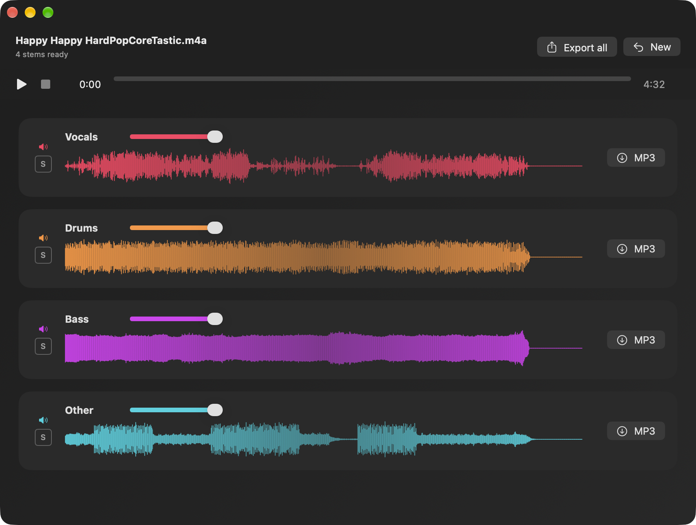
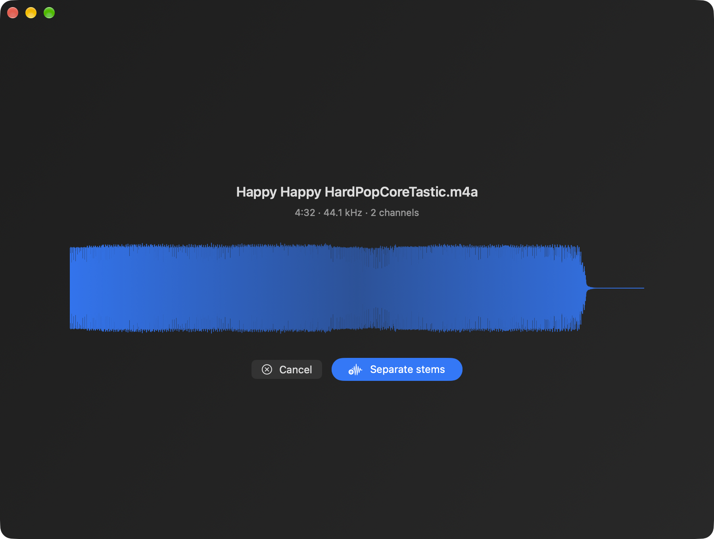
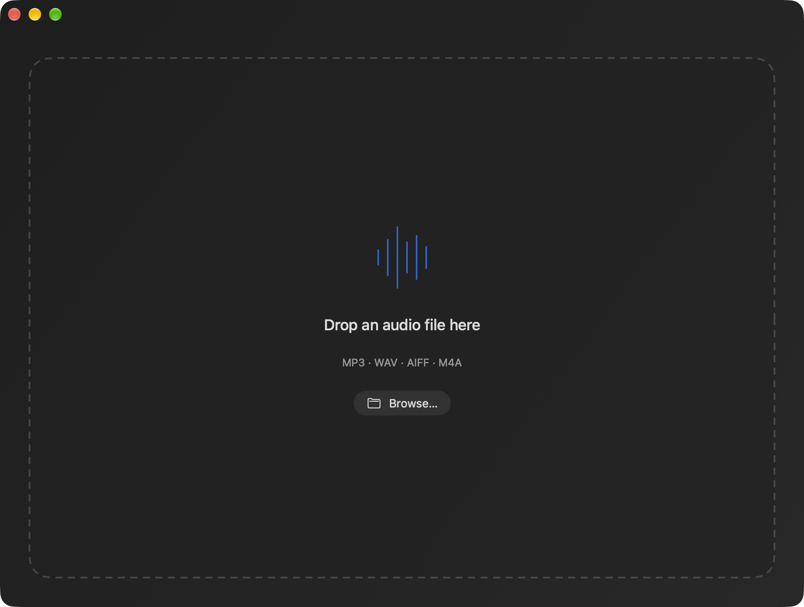

See it before you split it
The song’s waveform, duration and sample rate come first. One click on Separate stems, and the progress bar follows the models through the song.
Drop a song, get its vocals, drums, bass and everything else as four separate tracks. Deep learning on the Apple Silicon GPU, nothing sent anywhere: play the stems together, mute the vocals, export what you need.
Free and open source (MIT) · macOS 26.4 or later · signed and notarized · English and French

Vocals, drums, bass and other, from Meta’s htdemucs_ft — one fine-tuned Hybrid Transformer Demucs model per stem.
MLX runs the models on the Apple Silicon GPU. The song never leaves the Mac; only the model is downloaded, once (about 670 MB).
The four stems play in lock-step. Mute, solo and set the volume of each one — mute the vocals and you have a karaoke track.
One stem or all four at once, VBR V2 through LAME.
MP3, WAV, AIFF or M4A: drop it on the window or pick it with Browse….
Swift 6 and SwiftUI, MIT licence. English and French, following the system language.
The song’s waveform, duration and sample rate come first. One click on Separate stems, and the progress bar follows the models through the song.

No account, no settings. The window is a drop zone; the first separation fetches the model, every later one runs offline.

Open the .dmg, drag Quatuor onto Applications. It is signed with a Developer ID and notarized by Apple: it opens with a double click.